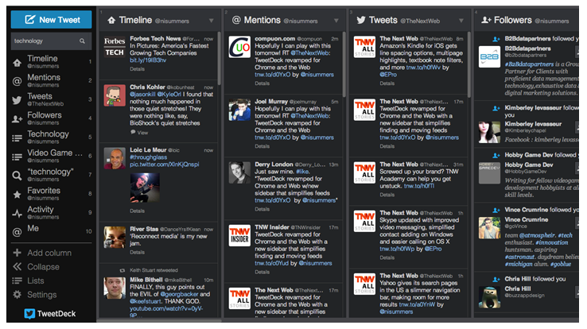
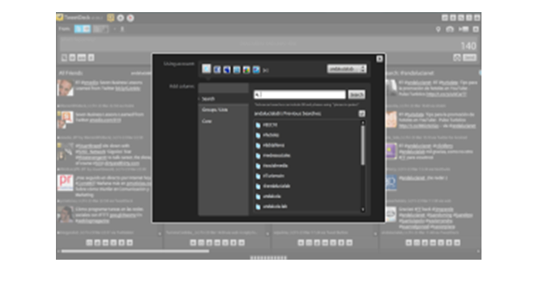

TweetDeck

TweetDeck, el escritorio de monitorización de redes sociales. Lo tenemos en
dos versiones: la de escritorio y la de Chrome y ambas son muy parecidas,
aunque últimamente la versión Chrome está incorporando utilidades, como mostrar
las fotografías que acompañan a los Tweets.
El manejo es muy sencillo, entras en
http://www.tweetdeck.com/
y eliges loguearte
para la versión Chrome (si usas este navegador) o te descargas la versión de
escritorio. Una vez has introducido tu cuenta de Twitter, vas añadiendo columnas.
Algunas, como la de amigos y menciones vienen ya preconfiguradas, si quieres tener
más, solo tienes que pinchar en este botón + (parte superior izquierda) y se desplegará
este menú:
